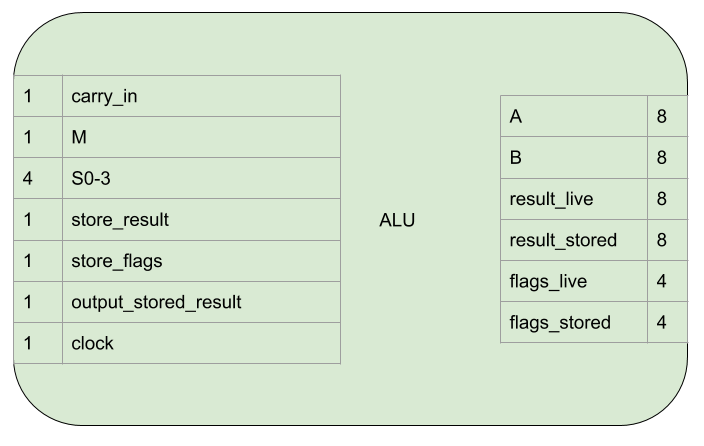

Arithmetic Logic Unit¶
The Arithmetic Logic Unit (ALU) performs arithmetical and logical operations using one or both of it’s inputs. The result is stored internally when desired and the value of that internal storage is also output when desired.
As well as calculating the result, pieces of information (flags) about the result or the two inputs are also stored internally when desired and the state of that internal storage is always output.
Interface and Operation¶
This is the interface of the ALU:
This is how it operates:
| Name | Bit width | Description |
|---|---|---|
| carry_in | 1 | If high, supply a carry in to the arithmetical operation. For subtraction operations this becomes an active low borrow_in. |
| M | 1 | Choose between arithmetical and logical operations. |
| S0-3 | 4 | Specify which arithmetical or logical operation. |
| store_result | 1 | While high, the result of the operation will be stored internally on a rising clock egde. |
| store_flags | 1 | While high, flags resulting from the current operation/inputs/result will be stored internally on a rising clock egde. |
| output_stored_result | 1 | Assert the value of the stored result onto the result_stored connection. |
| clock | 1 | A rising edge triggers result and flag storage if enabled. |
| A | 8 | The A input to the operation. |
| B | 8 | The B input to the operation. |
| result_live | 8 | The result of the current operation with the current inputs. |
| result_stored | 8 | The value of the stored result while output_stored_result is high, not connected otherwise. |
| flags_live | 4 | Flags resulting from the current operation/inputs/result. |
| flags_stored | 4 | The value of the stored flags. |
carry_in, M, and S0-3 are used to select from the available operations (from the datasheet).:

Not all of the operations are available for use in the computer, see the Language section for more details on which are available.
The output flags are:
| Name | Description |
|---|---|
| zero | The output of the ALU is zero (All bits 0) |
| negative | The output of the ALU is negative (when the 8 bits are read in 2’s compliment form. Also the same as the most significant bit being 1) |
| carry_borrow | If the operation was an addition and the value is high, there was a carry bit, if low, no carry. If the operation was a subtraction and the value is low, there was a borrow, if high, no borrow. |
| equality | When the ALU is in the appropriate mode, this flag indicates the A and B inputs are equal. |
Implementation¶
The logical arrangement of the ALU is like this:

A Safe Clock Enable circuit is only required in the Logisim version. It’s natively implemented in the 74HCT377 and 74HCT173 chips.
OR gates are used to OR all the bits together and then the result inverted to calculate the zero flag.
The most significant bit of the output is the negative flag.
The carry_borrow flag and the equality flag are output from the ALU (the carryborrow flag is inverted).
The following electronics are used:
- 2 x 74LS181 are used for the arithmetic and logic operations.
- A 74CHT00 is used to AND the two A=B outputs and invert carry_borrow_out.
- A 74HCT173 is used to store the flags.
- 2 x 74HCT32s are used to OR all the bits to check if it’s zero.
- A 74HCT04 is used to invert the result of the OR zero check, the store_flags control signal and the carry_borrow input signal.
- A 74HCT245 is used to provide tri-state buffering for result_stored to go onto the bus.
- A 74HCT377 stores the result of the operation from result_live.
- Another 74HCT04 is used to invert the store_result and output_stored_result signals as this inputs are active low.
The ALU resides on three breadboards. From top to bottom:
- ALU chips
- Zero checking and flag storage
- Result storage and output